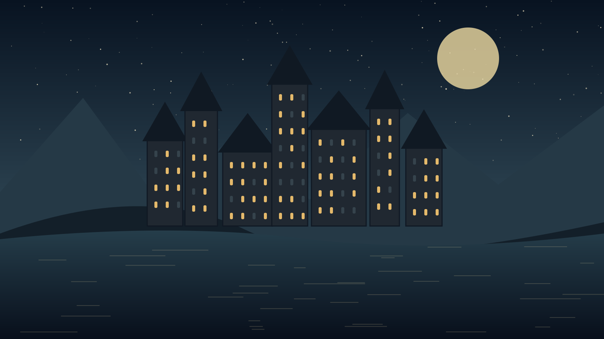
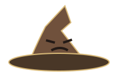

Грифиндор
Смелост и решителност
Годрик ГрифиндорПОКАНА ЗА ЕДНО НЕОБИКНОВЕНО ПЪТЕШЕСТВИЕ
Уважаеми бъдещ ученико,
Имаме удоволствието да Ви поканим да откриете света на магията.
Към замъка ↓Натисни восъчния печат, за да отвориш писмото.

01 / THE ARRIVAL02 / THE ARCHIVE
Хогуортс е измислено училище за магия от света на Хари Потър, създаден от Дж. К. Роулинг.
Училището е основано преди повече от хиляда години от четирима магьосници: Годрик Грифиндор, Хелга Хафълпаф, Роуина Рейвънклоу и Салазар Слидерин. Всеки от тях създава дом, който отразява неговите ценности.
Замъкът е скрит в Шотландия и е известен с подвижните си стълби, тайните проходи и вълшебните портрети. Учениците пристигат с експреса Хогуортс и прекарват седем години в изучаване на магия. Голямата зала е мястото за празници и церемонии.
| Основано | Около X век |
|---|---|
| Местоположение | Шотландия (измислено място) |
| Основатели | Четирима магьосници |
| Обучение | 7 години |
| Девиз | Draco dormiens nunquam titillandus |
03 / THE FOUR HOUSES
Смелост и решителност
Годрик Грифиндор
Амбиция и находчивост
Салазар Слидерин
Мъдрост и любознателност
Роуина РейвънклоуЛоялност и трудолюбие
Хелга Хафълпаф04 / THE CURRICULUM
05 / THE SORTING CEREMONY

Кое качество цениш най-много?
Избери своето качество.